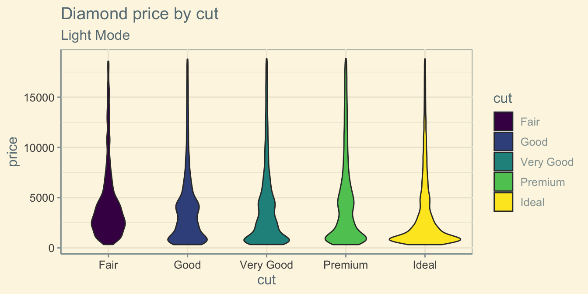
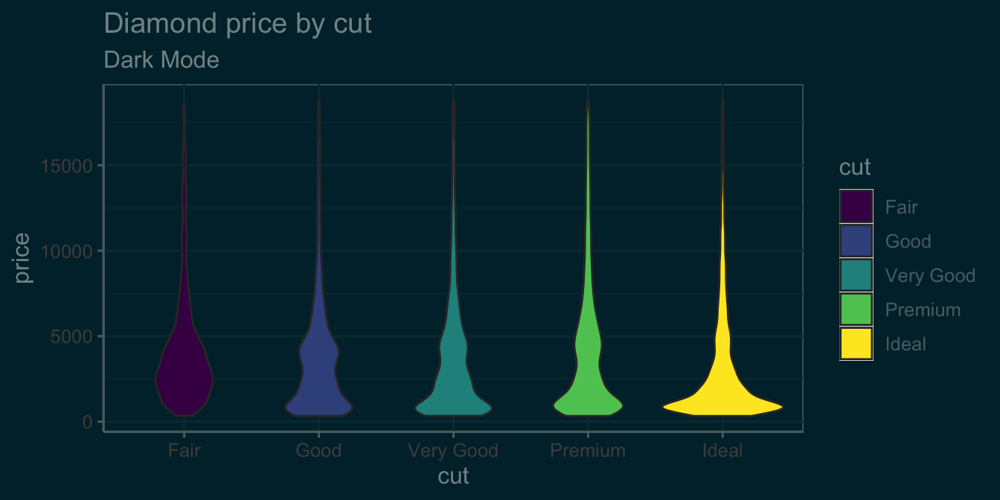
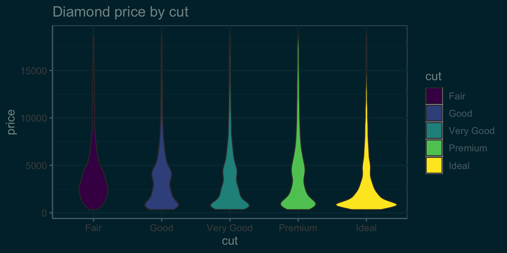
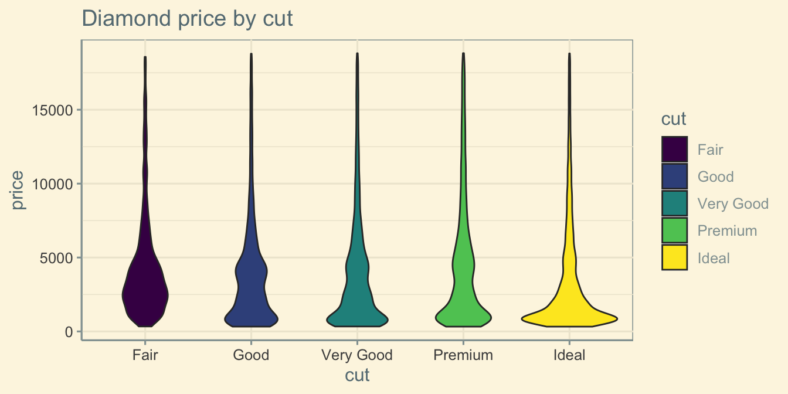

g <- ggplot(diamonds, aes(x = cut, y = price, fill = cut)) +
geom_violin() +
labs(title = "Diamond price by cut")Dark Mode
Demo
Toggle dark and light mode (there’s a switch in the upper right corner) to see the plot switch. Inspired by Marc-Aurèle Rivière.


The rest of this post shows my first iteration of the darkmode toggle. The version in quartoExtra is more complex to try to deal with special cases, so doesn’t work exactly like this.
Setup
Edit the _quarto.yml file to add your light and dark themes, plus .scss files for each. The quarto documentation on HTML Theming is a useful reference.
_quarto.yml:
format:
html:
theme:
light: [flatly, light.scss]
dark: [darkly, dark.scss]Create .scss files for light and dark mode. Set blocks with the class .light-mode to hide in dark mode, and blocks with the class .dark-mode to hide in light mode. You can also add other rules here to change SASS Variables for the themes. For example, I think the inline code colour is too dark in the darkly theme, and I hate the green links.
light.scss:
/*-- scss:defaults --*/
$link-color: #248CFC;
/*-- scss:rules --*/
.light-mode { display: block; }
.dark-mode { display: none; }dark.scss:
/*-- scss:defaults --*/
$link-color: #248CFC;
$code-color: #bb8acf;
/*-- scss:rules --*/
.dark-mode { display: block; }
.light-mode { display: none; }Switching
Now you can make your plots as normal.
Add #| classes: light-mode or #| classes: dark-mode to the code chunks to display their output conditionally.
g + labs(subtitle = "Light Mode") +
theme_solarized(light = TRUE)g + labs(subtitle = "Dark Mode") +
theme_solarized(light = FALSE)This also works for any content. Just put it inside of a div with the appropriate class.
::: {.light-mode}
Text that only shows in light mode
:::
::: {.dark-mode}
Text that only shows in dark mode
:::Text that only shows in light mode
Text that only shows in dark mode
Auto-theme
If you add the following code at the top of your script, it will automatically theme plots for you without the code above (you still need the setup). I’m using ggthemes::theme_solarized() in light and dark versions, but you can add any theme you like or a custom theme.
Thanks to Marc-Aurèle Rivière for pointing out that the original version using ggplot2:::print.ggplot() didn’t handle patchwork output right, but print() does.
library(knitr)
knit_print.ggplot <- function (x, options, ...) {
dark_theme = ggthemes::theme_solarized(light = FALSE)
light_theme = ggthemes::theme_solarized(light = TRUE)
orig_theme <- ggplot2::theme_get()
on.exit(ggplot2::theme_set(orig_theme))
# get html for light and dark
knitr::asis_output('\n<div class="dark-mode">\n')
ggplot2::theme_set(dark_theme)
print(x)
knitr::asis_output('</div>\n<div class="light-mode">\n')
ggplot2::theme_set(light_theme)
print(x)
knitr::asis_output('</div>\n\n')
}
registerS3method("knit_print", "ggplot", knit_print.ggplot)g
